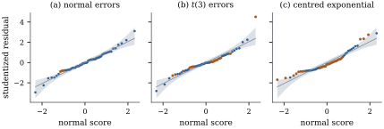

21.1 Checking normality
Normality turns the first two moments of least
squares into exact distributions. How much of Part III
needs it? Chapter
19 answered the question for coefficients. When no
observation carries much leverage,
The errors are never observed, so the first task is to say how well the residuals stand in for them.
21.1.1. Residuals are not the errors
If
Let
(a)
(b) Let
(c) Suppose the errors have skewness
Proof.
(a)
(b) Let
(c) Row
Parts (a) and (b) say that the residuals are good
proxies for the errors when
Take
import numpy as np
from scipy import stats
rng = np.random.default_rng(2101)
n = 30
designs = {}
for p in (2, 10, 20):
X = np.column_stack([np.ones(n), rng.normal(size=(n, p - 1))])
Q, _ = np.linalg.qr(X)
M = Q @ Q.T # the hat matrix
designs[p] = (M, np.diag(M).copy())
for p, (M, h) in designs.items():
# residual i = (row i of C) @ errors
C = np.eye(n) - M
# excess kurtosis of residual i / that of an error
kurt_kept = (C**4).sum(axis=1) / (1 - h) ** 2
# skewness of residual i / that of an error
skew_kept = (C**3).sum(axis=1) / (1 - h) ** 1.5
print(f"p = {p:2d}: max leverage {h.max():.2f}, "
f"average share of skewness kept {skew_kept.mean():.3f}, "
f"of excess kurtosis kept {kurt_kept.mean():.3f}")21.1.2. Normal probability plots
A normal probability plot graphs the
sorted values of a sample against the corresponding
quantiles of the standard normal distribution. If
For residuals, the unequal variances
A simulated envelope answers that.
Under normal errors the vector
Figure 21.1.1
shows plots for one simulated data set of

import numpy as np
from scipy import stats
rng = np.random.default_rng(2104)
n, p = 60, 3
X = np.column_stack([np.ones(n), rng.normal(size=(n, 2))])
Q, _ = np.linalg.qr(X)
h = np.sum(Q**2, axis=1) # leverages
def ext_studentized(y):
"""Externally studentized residuals t_i = e_i / (s_(i) sqrt(1 - h_ii))."""
e = y - Q @ (Q.T @ y)
s2 = e @ e / (n - p)
# squared internally studentized residuals
r2 = e**2 / (s2 * (1 - h))
return np.sign(e) * np.sqrt(r2 * (n - p - 1) / (n - p - r2))
# plotting positions
blom = stats.norm.ppf((np.arange(1, n + 1) - 0.375) / (n + 0.25))
sims = np.sort([ext_studentized(rng.normal(size=n)) for _ in range(1999)],
axis=1)
# pointwise envelope
lower, upper = np.percentile(sims, [2.5, 97.5], axis=0)laws = {
"normal": rng.normal(size=n),
"t(3)": rng.standard_t(3, size=n) / np.sqrt(3.0),
"centred exponential": rng.exponential(size=n) - 1.0,
}
beta = np.array([1.0, 2.0, -1.0])
for name, eps in laws.items():
t = np.sort(ext_studentized(X @ beta + eps))
outside = np.sum((t < lower) | (t > upper))
print(f"{name:20s}: {outside} of {n} points outside the envelope, "
f"Shapiro-Wilk p = {stats.shapiro(t).pvalue:.3f}")21.1.3. Formal tests
Many tests of normality exist. Four kinds are in common use for residuals.
- The Shapiro–Wilk statistic (Shapiro
and Wilk 1965) is
- The Shapiro–Francia statistic
(Shapiro and Francia 1972) replaces the weights by the
plotting positions, which makes it the squared
correlation between the sorted sample and the
- Moment tests use the sample
skewness
- Distance tests compare the empirical and fitted normal distribution functions: Kolmogorov–Smirnov with estimated parameters (Lilliefors 1967) and Anderson–Darling (Anderson and Darling 1952). They are usually less powerful than Shapiro–Wilk.
Applied to residuals, none of these has its nominal
null distribution, because the residuals are not a
sample. The effect on the level is small. In the design
of Example (How much non-normality survives)
with
In the same designs (
def errors(kind, size, rng):
"""Mean-zero, variance-one errors."""
if kind == "exp":
return rng.exponential(size=size) - 1.0
return rng.standard_t(5, size=size) / np.sqrt(5 / 3)
def power_table(reps, rng):
"""Rejection rates of the 5% Shapiro-Wilk test on errors and on residuals."""
table = {}
for kind in ("exp", "t5"):
for p, (M, h) in designs.items():
E = errors(kind, (reps, n), rng)
# residual vectors (M is symmetric)
R = E - E @ M
rej_err = np.mean([stats.shapiro(e).pvalue < 0.05 for e in E])
rej_res = np.mean([stats.shapiro(r).pvalue < 0.05 for r in R])
table[kind, p] = (rej_err, rej_res)
print(f"{kind:3s} p = {p:2d}: Shapiro-Wilk rejects "
f"errors {rej_err:.2f}, "
f"residuals {rej_res:.2f}")
return table
# a quick version (the book uses 4000 replications)
quick = power_table(400, rng)A test of normality also answers the wrong question. In small samples it passes error laws that would distort a prediction interval badly; in large ones it rejects departures too small to matter. The useful question is whether the departure is large enough to affect the inference at hand. For coefficient tests without high-leverage points it rarely is. For prediction intervals it can be, as the next result shows.
21.1.4. What non-normality does to prediction intervals
Under normal errors the interval
The limit is the probability that a single error
falls within
Table 21.1.1. Limiting coverage of the usual prediction interval (Proposition 12.3.3) when the errors are not normal, with the limiting probabilities of missing below and above in parentheses. All five laws have mean zero and variance one.
| error law | nominal 80% | nominal 95% | nominal 99% |
|---|---|---|---|
| normal | 0.800 (0.100, 0.100) | 0.950 (0.025, 0.025) | 0.990 (0.005, 0.005) |
| 0.841 (0.079, 0.079) | 0.947 (0.026, 0.026) | 0.979 (0.010, 0.010) | |
| 0.887 (0.057, 0.057) | 0.957 (0.021, 0.021) | 0.979 (0.010, 0.010) | |
| uniform | 0.740 (0.130, 0.130) | 1.000 (0.000, 0.000) | 1.000 (0.000, 0.000) |
| centred exponential | 0.898 (0.000, 0.102) | 0.948 (0.000, 0.052) | 0.972 (0.000, 0.028) |
Heavy tails make a 99% interval too short and an 80%
interval too long. The 95% level lies near the crossing
point, so checking a 95% interval alone would miss the
problem. For the skewed law every miss is above the
interval, since a centred exponential error is never
below
import numpy as np
from scipy import stats
laws = {
"normal": stats.norm(),
"t(5)": stats.t(5, scale=np.sqrt(3 / 5)),
"t(3)": stats.t(3, scale=np.sqrt(1 / 3)),
"uniform": stats.uniform(loc=-np.sqrt(3), scale=2 * np.sqrt(3)),
"centred exponential": stats.expon(loc=-1.0),
}
for name, law in laws.items():
assert abs(law.var() - 1) < 1e-9 and abs(law.mean()) < 1e-9
row = []
for level in (0.80, 0.95, 0.99):
z = stats.norm.ppf(0.5 + level / 2)
below, above = law.cdf(-z), law.sf(z) # miss low, miss high
row.append(f"{1 - below - above:.3f} ({below:.3f}, {above:.3f})")
print(f"{name:20s}", " ".join(row))The remedy is to use the residuals for what they are
good at, estimating the error distribution: empirical
quantiles of the residuals in place of
21.1.5. Exercises
A. Check your understanding
In simple regression with
B. Practice
Assume
Solution.
For centred exponential errors,
Solution. Here
In a one-way layout in which every group has
C. Going deeper
Under the assumptions of Proposition 21.1.1,
suppose